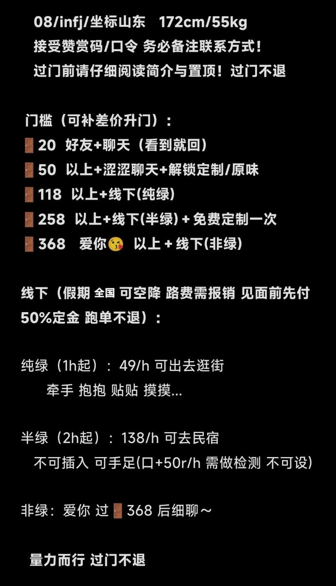
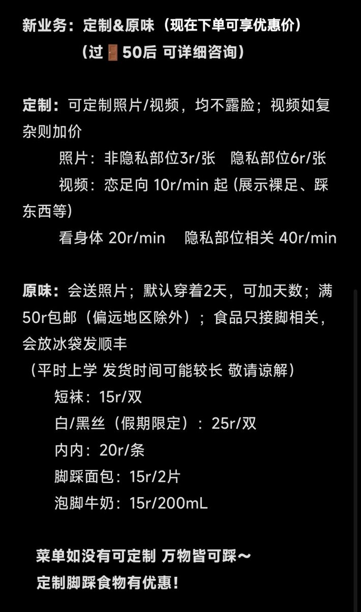
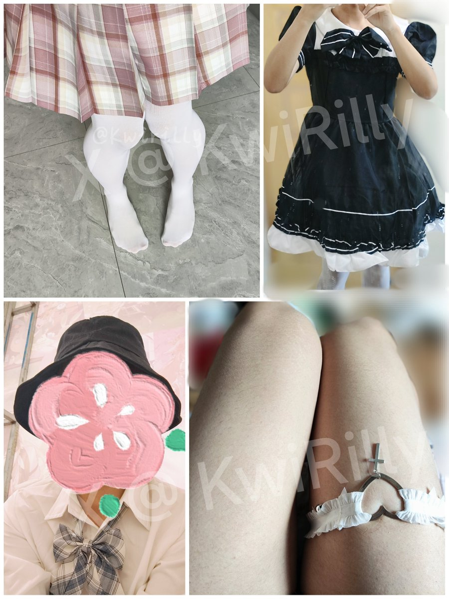
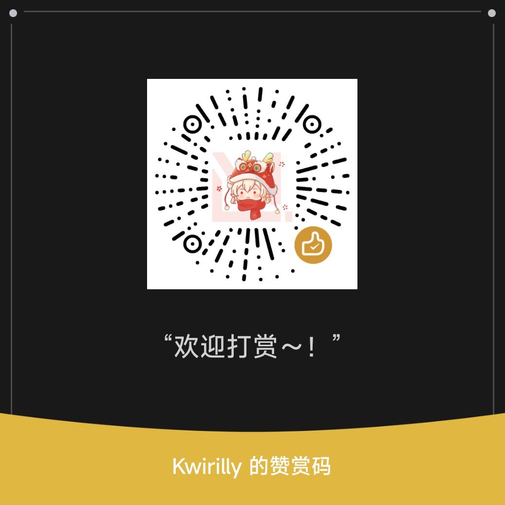

Yun
@yunch529
RT @KawaiiRilly0: 新置顶～！
最近有0个门哥 所以价格又降了...
你好！我素Rilly！生活所迫来推乞讨
08 infj 172/55
喜欢交朋友 互fo等欢迎私信！
想买新裙子穿！希望有人能包养我！
欢迎打赏 一分也是爱 会用来呈现更好的作品的！🥺
〔…




KwiRilly的小号
@KawaiiRilly0
新置顶～！
最近有0个门哥 所以价格又降了...
你好！我素Rilly！生活所迫来推乞讨
08 infj 172/55
喜欢交朋友 互fo等欢迎私信！
想买新裙子穿！希望有人能包养我！
欢迎打赏 一分也是爱 会用来呈现更好的作品的！🥺
〔入门前请看好简介！〕
#门槛 #门槛哥 #线下 #原味 #定制 #男娘 #可爱的男孩子 https://t.co/GpQ3Zp2MKG